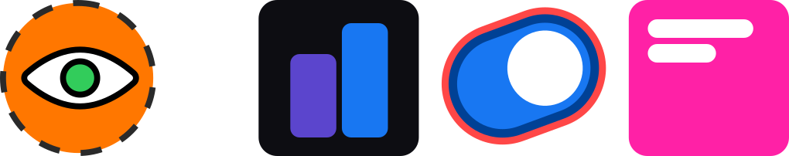

The first step toward a bigger vision
Today's co-pilot

Tomorrow's agent
An AI operator that understands how your accounts work: surfaces creative recommendations from your historical performance, flags rule conflicts before they run, and acts as a real second pair of eyes on your account
